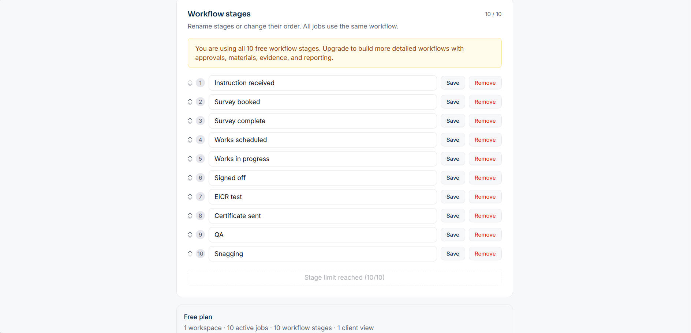

01
Live job visibility
How you track active jobs, stages, blockers, owners, and next actions.
Jobs stuck in progress with no clear owner or next step.
Contractor OS helps contractor teams see what is live, what is stuck, what needs approval, and what needs evidence before work gets missed.
Start with the free tracker, then upgrade when you need fuller contract control.
Animated Contractor OS product preview showing live jobs, workflow progress, approvals, and contract visibility.
Sound Familiar?
Most contractors are not short of effort. The problem is that job progress sits across phone calls, emails, WhatsApp messages, spreadsheets, and people's heads.
When a client asks "where is this up to?", somebody has to stop, check, chase, and reply. The same question gets asked again next week.
The Free Client Visibility Tracker gives them a simple stage-by-stage view, so they see progress without needing constant updates.
How most contractor businesses track live work today
Free Client Visibility Tracker
Set up your workflow, add up to 10 live jobs, and share one read-only client view. It gives contractors a simple way to show job progress before moving into fuller contract control.
The video above shows the manager dashboard, stage completion, and the read-only client view. No audio. No login required for the client.
Your workflow, your stages
Name up to 10 stages to match your workflow. Rename them, reorder them, and mark each one complete as work moves forward.

The free tracker gives visibility. Contractor OS gives control.
A Real Example
A client calls asking for a job update. What happens next is where most contract control problems become visible.
Client calls:
"I'm just checking on the status of Fountain View. Where are we up to?"
Contract manager:
Searches emails, opens three spreadsheets, messages the site operative on WhatsApp.
Found it:
Client asks:
"Great. Do you have a confirmed delivery date on the kitchen materials yet?"
Manager replies:
"I'll need to check on that and come back to you."
Client: "The housing association is pushing us for results this week."
This is what Fountain View looks like inside Contractor OS.
Watch how the problem happens
A short walkthrough is being prepared. For now, the scenes opposite show the exact problem Contractor OS is built to control.
If this sounds familiar
Contractor OS gives every live job a single controlled record. The manager can answer the client before the phone rings. No chasing. No reconstructing.
How Jobs Move
Every stage requires confirmed evidence, owned actions, and approved decisions before the job can advance. No gaps. No assumptions.
Inside Contractor OS
Four views that give managers, operatives, and clients the visibility they need — without chasing, reconstructing, or guessing.
Client Portal
When clients can see where their jobs are sitting, the pressure on your team drops. The portal shows current stage, last update, next steps, and any outstanding items — without giving access to your internal systems.
Field & Office
Operatives log visits, upload photos, flag blockers, and mark jobs complete from site. Every action updates the live job record immediately — no paper, no WhatsApp, no back-filling later.
What It Controls
Contractor OS connects the areas of contract delivery that most businesses currently manage in separate, disconnected tools.
Every active job — its stage, its owner, its blocker, its next action — in one view. Without asking.
Approvals tracked, owned, and escalated. Evidence required before stages can close — not hoped for after the fact.
Materials confirmed before a job is booked. No more arriving on site to find nothing is there.
Variations raised, approved, and tracked with a full commercial timeline. Nothing falls through the gap between instruction and invoice.
Blockers, overdue stages, outstanding approvals, and evidence gaps surfaced automatically. Managers see what needs attention — not everything at once.
Consistent, traceable client updates without manual assembly. Reports show the real picture — not just what closed.
The Next Step
Once basic visibility shows where jobs are getting stuck, the Contract Control Review helps identify the wider control gaps around approvals, materials, evidence, handover, reporting, and margin risk.
We map your workflow, review sample jobs, assess evidence and approval practice, and identify where control is being lost. You get a practical findings report and improvement plan.
This is not a software demo. It is not a sales call. It is a professional contract control assessment — and you get findings whether or not you go on to set up Contractor OS.
Book a Contract Control ReviewWhat the review covers
Areas Reviewed
The review is structured around the areas where housing contractors most commonly lose control of live jobs.
01
How you track active jobs, stages, blockers, owners, and next actions.
Jobs stuck in progress with no clear owner or next step.
02
Where work waits for client decisions, internal approval, further information, materials, or access.
Additional works sitting unapproved while the programme drifts.
03
Whether job records contain the photos, notes, checks, certificates, and sign-off evidence needed to protect the business.
Completion claimed but final photo evidence is missing.
04
Where poor diagnosis, missing materials, unclear scope, or weak handover creates extra visits.
Operatives returning because first-visit notes did not capture the full issue.
05
How much time managers spend finding updates instead of managing outcomes.
Contract managers chasing WhatsApp, emails, spreadsheets, and site calls.
06
How well your current reports show real contract control, not surface-level activity.
Reports show completed jobs but not blockers, approval delays, or evidence gaps.
07
Where labour, materials, variations, missed extras, or late approvals create margin risk.
Extra labour used before the cost impact is visible.
What You Receive
At the end of the review you receive a clear set of outputs you can act on immediately — whether or not you proceed with Contractor OS.
A clear report showing where control is strong, weak, or missing — written for a decision-maker.
A single red, amber, and green overview across every control dimension reviewed.
A prioritised list of the issues creating delay, risk, admin overhead, or margin leakage.
A practical action plan for the first improvements worth making — not a strategy document.
What to fix first, who should own it, and why it matters. Specific and actionable.
No pressure. No invention. No claims without evidence.
Is This Right For You?
This review is for small and medium contractor businesses running housing repairs, voids, planned works, maintenance, compliance, extra care, or FM contracts.
The Process
We confirm your contract type, workstream, current process, and main pressure points. 20 minutes.
We review your workflow, sample jobs, evidence practice, approvals, and manager load over two to three weeks.
We present the findings directly. No slides. A working conversation about what we found and what to do about it.
You leave with a findings report, control gap list, and 30-day improvement plan. You decide what happens next.
Questions
Get Started
The free tracker gives your client a simple stage-by-stage view of where each job sits. When you need deeper control — approvals, evidence, materials, handover packs, and reporting — the Contract Control Review identifies exactly where to start.
Get Your Free Job TrackerAlready using the tracker and need more control? Book a Contract Control Review →